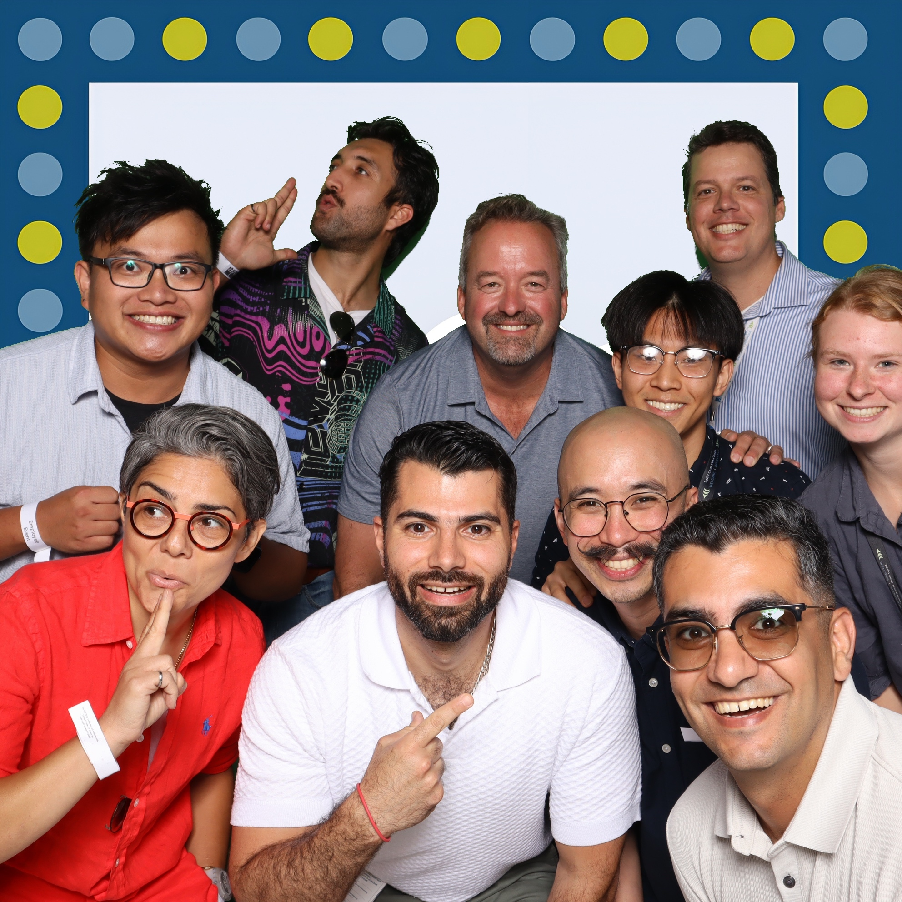
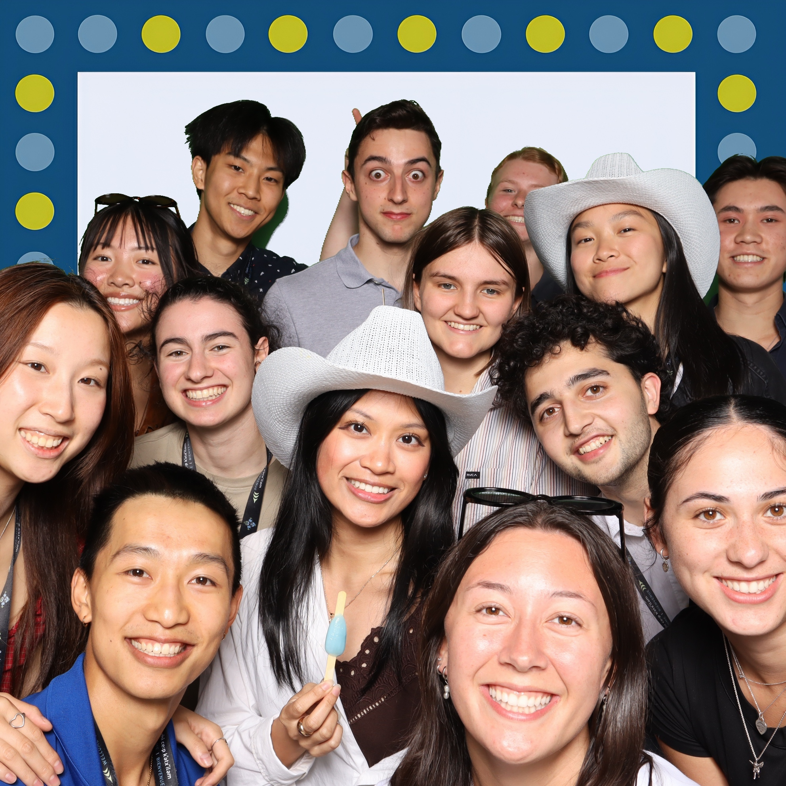
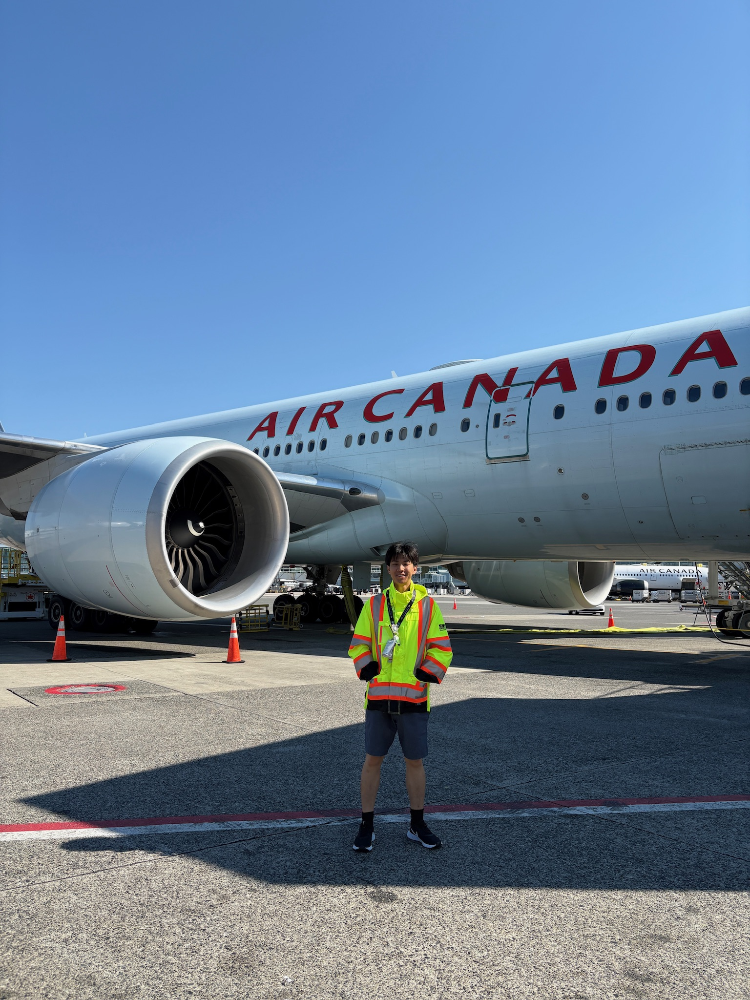
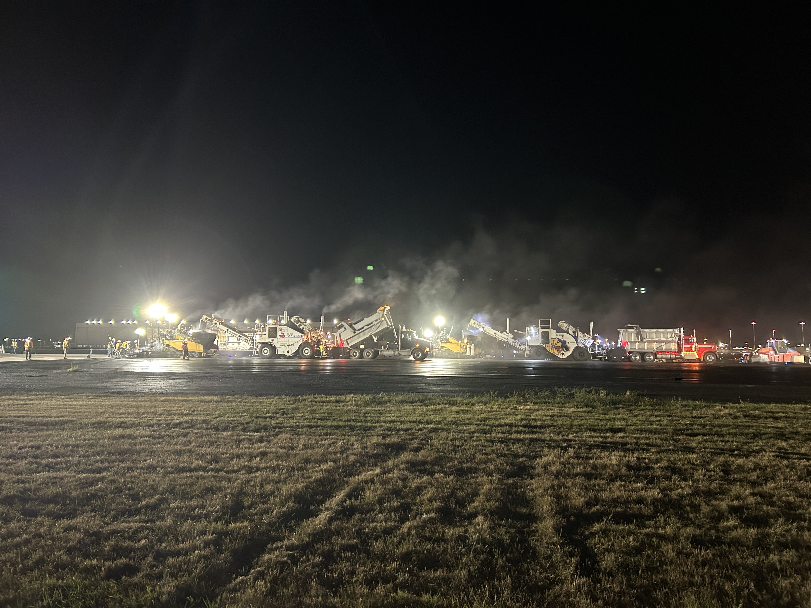
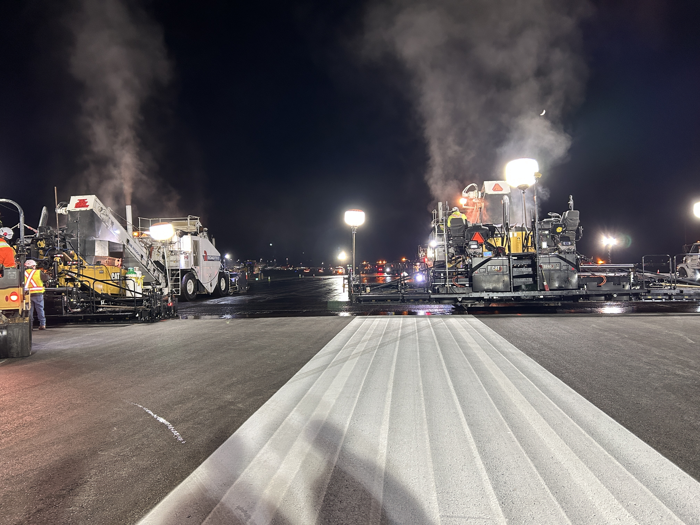
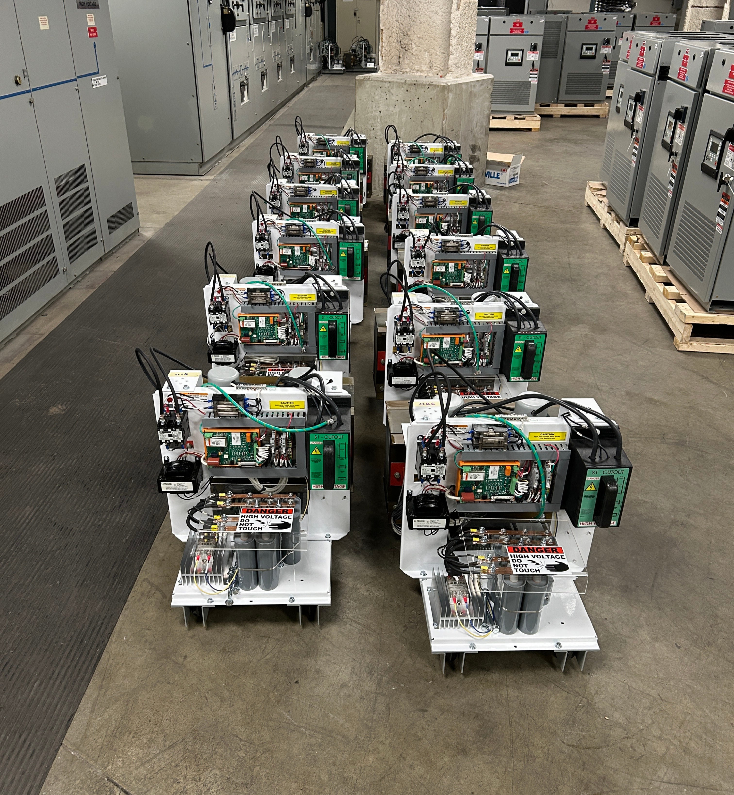
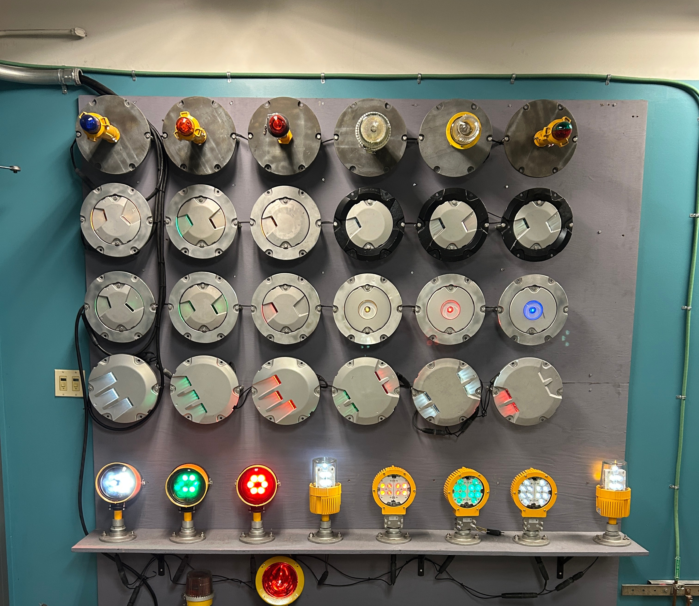

Vancouver Airport Authority (YVR)
Jan 2025 – Aug 2025
I supported YVR’s North Runway Program by helping with technical coordination, project documentation, and stakeholder communication across paving, drainage, and electrical work scopes.
I developed a master project tracker totalling $170M to determine the earned value of completed works. This included daily work tracking and monthly billing verification, where I caught a discrepancy of approximately $30k. Using completed work progress, I modelled progress rates and extrapolated project completion dates.
Being involved with the North Runway Program allowed me to understand how complex the airport is as an operational system and the critical infrastructure needed in a safety-critical environment.
I also created a technical manual of YVR’s Airfield Lighting System and Power Distribution System with TP312 aerodrome compliance standards from scratch. This gave me a stronger technical understanding of airfield electrical infrastructure, including how lighting, power distribution, and emergency systems support safe and reliable airport operations.
Lastly, I was involved in project support and coordination for Constant Current Regulator replacements and Generator/UPS repairs.

yvr-airside-team.jpg
The wonderful airside team which I got the great opportunity to work alongside with!

yvr-coops.jpg
The wonderful co-ops I was able to work alongside with!

yvr-many-planes.jpg
I got to be up close to many planes in this environment.

yvr-asphalt-paving.jpg
After applying a tack coat to around ~100m of the runway, the 2nd lift of a nominal 70-80mm of asphalt paving started at around 12am.
yvr-4am-runway.mp4
Driving down the North Runway at 4am.

yvr-first-lift.jpg
1st lift of a nominal 70-80mm of asphalt paving after tack coat was applied. This was near the 08L end near the "piano keys" of the runway threshold.

yvr-ccr-replacement.jpg
Regulator replacement during the 2nd week of coordination.

yvr-airfield-lighting.jpg
Elevated and inset lights used across the airfield.